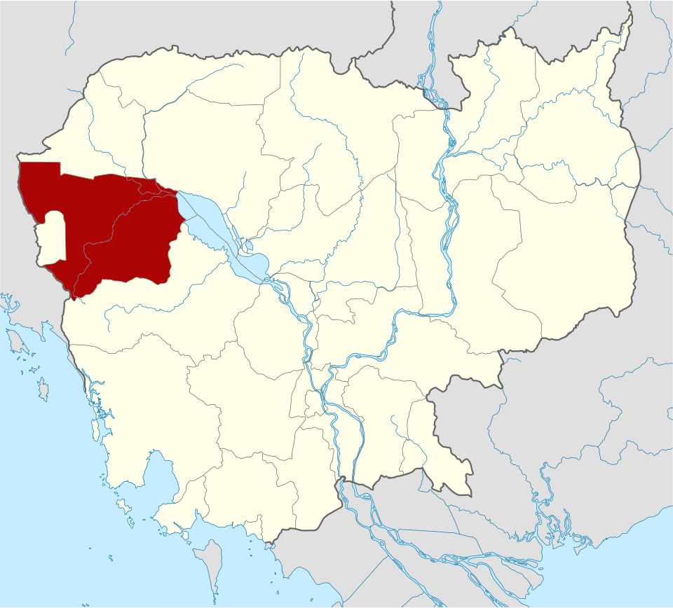
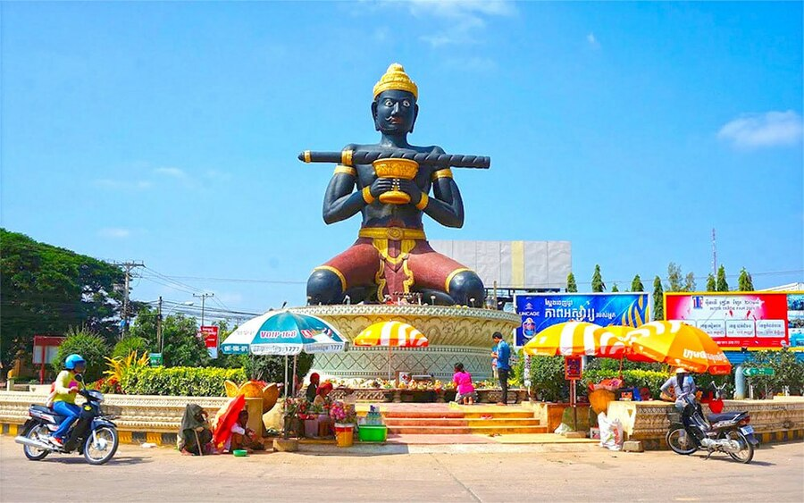
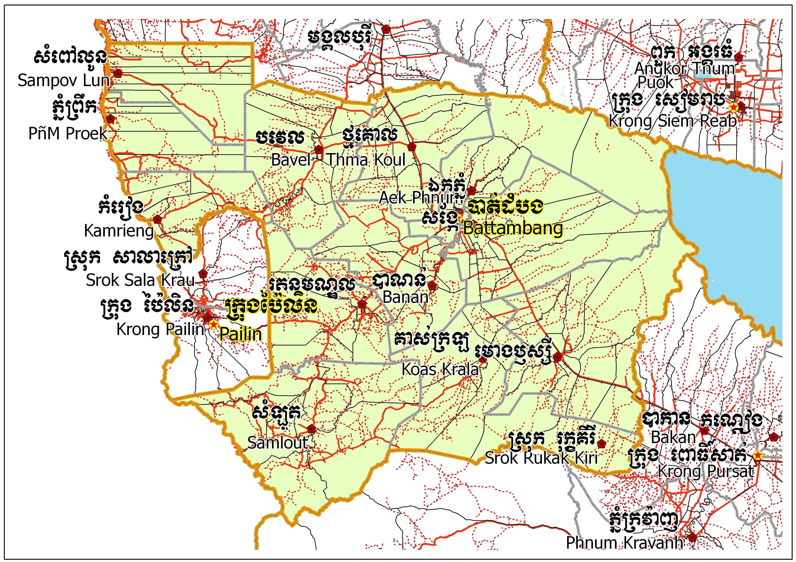
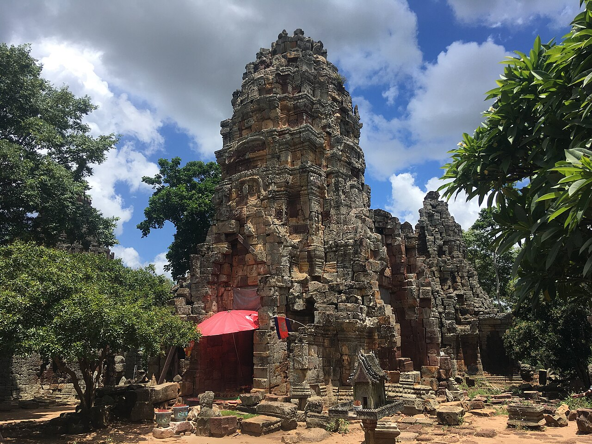
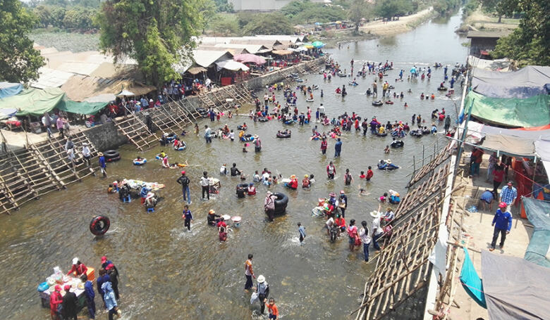

Battambang
← ត្រឡប់ទៅផែនទីខេត្តបាត់ដំបង (អង់គ្លេស : Battambang Province) គឺជាខេត្តមួយដែលមានទីតាំងស្ថិតនៅភាគពាយ័ព្យនៃ ព្រះរាជាណាចក្រកម្ពុជា។ទីរួមខេត្តរបស់ខេត្តបាត់ដំបងគឺក្រុងបាត់ដំបង។ខេត្តបាត់ដំបងមានព្រំប្រទល់ខាងជើង ជាប់នឹងខេត្តបន្ទាយមានជ័យខាងកើតជាប់នឹងខេត្តសៀមរាបនិងបឹងទន្លេសាបខាងត្បូងជាប់នឹងខេត្តពោធិ៍សាត់ និងខាងលិចជាប់នឹងខេត្តប៉ៃលិននិងខេត្តច័ន្ទបុរី។បើតាមសិលាចារឹកថ្មប្រាសាទដែលយើងមាននិងបានរកឃើញរហូតមកដល់សព្វថ្ងៃនេះនៅក្នុងសម័យមុនអង្គរនិងសម័យអង្គរគេ ពុំបានឃើញចែងឲ្យយើងដឹងថាតើសម័យនោះមានភូមិស្រុកណាមួយដែលមានឈ្មោះបាត់ដំបងនោះទេ។ប៉ុន្តែយើងក៏មិនហ៊ានសន្និដ្ឋានថា ឈ្មោះបាត់ដំបងនេះមានប្រើឬមិនប្រើនៅក្នុងសម័យនោះដែរ។ប៉ុន្តែនៅក្នុងសម័យអង្គរនិងសម័យក្រោយអង្គរតាម ឯកសារមហាបុរសខ្មែរមានប្រើឈ្មោះស្រុកបាត់ដំបង។ហេតុអ្វីបានជាហៅឈ្មោះបាត់ដំបង?ប្រវត្តិសាស្ត្រសរសេរនៅលើ សិលាចារឹកមិនបានឆ្លើយឲ្យដឹងឡើយគឺមានតែនៅក្នុងរឿងព្រេងប៉ុណ្ណោះគឺរឿងតាដំបងក្រញូងដែលខ្មែរយើងយល់ថា គឺជារឿងកើតមានតាំងពីសម័យអង្គរដែលបានពន្យល់ពីដើមហេតុដែលនាំឲ្យយើងហៅឈ្មោះបាត់ដំបងឬអូរដំបង។ ឯឈ្មោះព្រះដំបងគឺស្តេចរាមាទី ០១ កំណត់ឲ្យហៅឈ្មោះភូមិសង្កែថាជាព្រះដំបង។

ខេត្តបាត់ដំបង គឺជាខេត្តមួយស្ថិតនៅតំបន់ភាគពាយ័ព្យនៃព្រះរាជាណាចក្រកម្ពុជាមានចម្ងាយ ២៩១ គីឡូម៉ែត្រពីរាជធានីភ្នំពេញដែលមានព្រំប្រទល់ខាងកើតជាប់នឹងខេត្តសៀមរាបនិងបឹងទន្លេសាបខាងលិចជាប់ នឹងខេត្តប៉ៃលិននិងខេត្តច័ន្ទបុរីខាងជើងជាប់នឹងខេត្តបន្ទាយមានជ័យនិងខាងត្បូងជាប់នឹងខេត្តពោធិ៍សាត់។ នៅភាគខាងលិចមានព្រំប្រទល់ប្រវែង ១៤៤.៨ គីឡូម៉ែត្រជាប់នឹងខេត្តច័ន្ទបុរី ខេត្តត្រាច និង ខេត្តស្រះកែវ។ ខេត្តបាត់ដំបងមានផ្ទៃដីចំនួន ១១៧០២ គីឡូម៉ែត្រការ៉េមានក្រុងចំនួន ០១ ស្រុកចំនួន ១៣ ឃុំចំនួន ៩៣ សង្កាត់ ១០ និង ភូមិចំនួន ៨១០។ខេត្តនេះមានច្រកទ្វារព្រំដែនអន្តរជាតិ ០១ គឺច្រកដូងនៅក្នុងស្រុកកំរៀងនិងច្រកទ្វារតំបន់ព្រំដែន ០៤ ទៀត គឺច្រកទ្វារគីឡូ ១៣(ភ្នំដី)នៅក្នុងស្រុកសំពៅលូន ច្រកទ្វារអូររំដួលនៅក្នុងស្រុកភ្នំព្រឹក ច្រកទ្វារអូរអន្លក់(សួនស៊ុំ)នៅក្នុងស្រុកកំរៀង និង ច្រកទ្វារឆករកា(៤០០)នៅក្នុងស្រុកសំឡូត។


ខេត្តបាត់ដំបង ចែកចេញជា ១៤ ក្រុង/ស្រុក ១០៣ សង្កាត់/ឃុំ និង ៨១០ ភូមិ៖
ប្រាសាទភ្នំបាណន់ គឺជាបុរាណដ្ឋានវប្បធម៌ និងធម្មជាតិ មានទីតាំងស្ថិតនៅភូមិបាណន់ ឃុំកន្ទឺរ២ ស្រុកបាណន់ ខេត្តបាត់ដំបង មានចម្ងាយប្រមាណ ២០ គីឡូម៉ែត្រ ភាគខាងត្បូងពីទីរួមខេត្តបាត់ដំបង ។ ប្រាសាទភ្នំបាណន់ស្ថិតនៅភូមិបាណន់ ឃុំកន្ទឺ2 ស្រុកបាណន់ដែលមានចម្ងាយប្រមាណ ២៤គម ពីទីរួមខេត្តបាត់ដំបងភាគខាងត្បូង។ ប្រាសាទភ្នំបាណន់ជាកន្លែងប្រវត្តិសាស្រ្តមួយដ៏ល្អឯក និងជាសំនង់ប្រាសាទបុរាណមួយដែលសល់តាំងពីសម័យមុនអង្គរមកម្លេះ។ «ភីមបុរ» ត្រូវបានគេស្គាល់ថាជាទឹកដីបុរាណមួយផ្នែកនៃខេត្តបាត់ដំបងបច្ចុប្បន្ន។ ឈ្មោះនេះមានតាំងពីសម័យមុនអង្គរមកម្ល៉េះនិងបន្ដប្រើរហូតមកដល់សម័យអង្គរ។ «ភីមបុរ» មួយភាគធំស្ថិតនៅខាងលិចស្ទឹងសង្កែ ដែលយ៉ាងហោចណាស់មានវិសាលភាពចាប់ពីតំបន់ភ្នំបាណន់រហូតមកតាមដងស្ទឹងសង្កែ។ ម្យ៉ាងទៀត «ភីមបុរ» ទំនងជាមានទីប្រជុំជនដំបូងនៅតំបន់ភ្នំបាណន់នេះនិងរីកចម្រើនលាតសន្ធឹងវិសាលភាពចេញពីទីនេះ។នៅសម័យអង្គរគេច្រើនចាត់ទុក «ភីមបុរ» នេះជា «វិស័យ» ផងនិងជា «ប្រមាណ» ផង និងមានខ្លះហៅជាស្រុកផងដែរ។ «វិឞយ» ឬ «វិស័យ» ជាពាក្យហៅបំណែងចែកដែនដីរដ្ឋបាល ដែលតាមន័យរបស់ពាក្យអាចហៅសំដៅដល់តំបន់ ភូមិភាគ ស្រុក ឬអាណាចក្របានផងដែរ។ ប៉ុន្ដែក្នុងសិលាចារឹកខ្មែរពុំអា ចសំដៅដល់អាណាចក្របានឡើយ។ ដូចគ្នានឹង «វិស័យ» ដែរ, «ប្រមាន៑» ឬ «ប្រមាណ» ជាបំណែកចែកដែនដីរដ្ឋបាលមួយប្រភេទ ដែលតាមពាក្យមានន័យថាជាទីប្រជុំជនធំឬ ទីក្រុង។ ភីមមានន័យថាដែលគួរឱ្យខ្លាច ដែលគួរឱ្យកោតខ្លាច។ «ភីម» ក៏ជាឈ្មោះរបស់តួអង្គមួយក្នុងរឿងមហាភារតផងដែរ។ ដូច្នេះ តាមកម្រិតវចនសព្ទ «ភីមបុរ» អាចមានន័ យថា ទីក្រុងដែលគួរឱ្យកោតខ្លាច ឬទីក្រុងរបស់ភីម។ សិលាចារឹកដែលយើងដកស្រង់មកនេះ ជាសិលាចារឹកសម័យមុនអង្គរ រកឃើញនៅជិតភ្នំបាណន់ ខេត្តបាត់ដំបង។


ផ្ទៃទឹកដ៏ធំល្វឹងល្វើយមើលដាក់កន្ទុយភ្នែក។ ធ្លាប់ជាទីកន្លែងសម្រាប់ភ្ញៀវទេសចរជាតិ និងអន្តរជាតិយ៉ាងច្រើនអនេកធ្វើដំណើរទៅហែលទឹកលេងកម្សាន្តយ៉ាងត្រជាក់ចិត្ត សម្រាកលំហែកាយលើខ្យូសមាត់ទឹកស្រូបយកខ្យល់អាកាសដ៏បរិសុទ្ធ គយគន់ជួរភ្នំដ៏វែងអន្លាយជាប់ជើងមេឃ។ ប៉ុន្តែបច្ចុប្បន្ន ទីនោះបានក្លាយទៅជាទីរហោឋានដ៏ស្ងត់ជ្រងំ បន្សល់ទុកតែស្លាកស្នាមអនុស្សាវរីយ៍ ជាមួយនឹងផ្ទៃទឹកលាតសន្ធឹងដាក់កន្ទុយភ្នែកគួរឲ្យស្រណោះ។ នោះគឺជា រមណីយដ្ឋាន «អាងកំពីងពួយ»។រមណីយដ្ឋាន «កំពីងពួយ» ដែលមានទីតាំងស្ថិតនៅភូមិតាង៉ែន ឃុំតាគ្រាម ស្រុកបាណន់ មានបណ្ដោយប្រវែង៦,០០០ម៉ែត្រ និងទទឹងប្រវែង១,៩០០ម៉ែត្រ អាចរក្សាទឹកទុកបានរហូតដល់ទៅ១១០,០០០,០០០ម៉ែត្រគូប (មួយរយដប់លានម៉ែត្រគូប) នៅរដូវរស្សា។ វាត្រូវបានកសាងនៅក្នុងឆាកសោកនា. ដកម្មដ៏ប្រល័យ នៃសម័យខ្មែរក្រហមគ្រប់គ្រងក្នុងទសវត្សឆ្នាំ៧០។ សំណង់នេះ ត្រូវបានគេប្រើប្រាសកម្លាំងមនុស្សសុទ្ធសាធរាប់ម៉ឺននាក់ រែកសែងដីសាងសង់ជាទំនប់ទឹកដ៏ធំមហិមាក្នុងសម័យនោះ ដែលផ្នែកខ្លះហ៊ុមព័ទ្ធទៅដោយជួរភ្នំ។ នេះបើយោងតាមឯកសារនានា ដែលត្រូវបានគេចងក្រងទុកមកដល់សព្វថ្ងៃ។
រមណីយដ្ឋានភ្នំសំពៅ មានទីតាំងស្ថិតនៅក្នុងភូមិសំណាញ់ ឃុំភ្នំសំពៅ ស្រុកបាណន់ ខេត្តបាត់ដំបង មានចម្ងាយ១៣គីឡូម៉ែត្រ គិតពីសាសាខេត្តបាត់ដំបង ដោយធ្វើដំណើរឆ្ពោះទៅទិសខាងលិច តាមផ្លូវជាតិលេខ ៥៧ (អតីតផ្លូវជាតិលេខ១០) ។ ដើម្បីទៅដល់ទីតាំងរមណីយដ្ឋាន ភ្ញៀវទេសចរអាចធ្វើដំណើរតាមមធ្យោបាយដូចជា៖ តាមរថយន្តប្រមាណ២០នាទី, តាមម៉ូតូប្រមាណ ២១នាទី, រ៉ឺម៉កកង់បី៣០នាទី, និងកង់ប្រមាណជា៥០នាទី។ បើមើលពីចម្ងាយភ្នំនេះ មានរូបរាងស្រដៀងទៅនឹងសំពៅ លើភ្នំទាំងមូល មានល្អាង តូច ធំ រហូតដល់១២ល្អាង ប៉ុន្តែមានតែបីល្អាងប៉ុណ្ណោះ ដែលអាចទស្សនាបាន ហើយឈ្មោះភ្នំ និងល្អាងមួយចំនួន ក៏មានប្រវត្តិគួរឱ្យចាប់អារម្មណ៍ពាក់ព័ន្ធនឹងរឿងព្រេងនិទានខ្មែរ (រឿងព្រះចៅរាជថ្កុល នាងរំសាយសក់) និងត្រូវបានរៀបរាប់ក្នុងបទចម្រៀងជាច្រើនបទ (បទជើងភ្នំសំពៅ, បាចផ្កាម្រះព្រៅ….) ដែលច្រៀងដោយអ្នកចម្រៀងដ៍ល្បីនាសម័យដើមផងដែរ។ នៅពេលឡើងដល់កំពូលភ្នំ ទេសចរអាចមើលឃើញទេសភាពវាលស្រែ ចម្ការដំណាំ ចង្កោមភ្នំនានា ទិដ្ឋភាពទីក្រុងបាត់ដំបង ស្រូបយកខ្យល់អាកាសត្រជាក់បរិសុទ្ធ និងមើលថ្ងៃលិចយ៉ាងស្រស់ស្អាតទៀតផង។មណីយដ្ឋានភ្នំសំពៅ ក៍ជាទីបូជនីយដ្ឋានមួយផងដែរសម្រាប់ពុទ្ធសាសនិកជន ដែលមកពីទីជិតឆ្ងាយមកគោរពបូជា និងធ្វើពិធីកម្មសាសនាផ្សេងៗ នៅបរិវេណរមណីយដ្ឋានមាន វត្តចំនួនពីរ គឺ៖ វត្តមួយនៅលើភ្នំ ឈ្មោះ វត្តគិរីរម្យ និងវត្តមួយទៀតនៅ ជើងភ្នំ ឈ្មោះ វត្តសុវណ្ណគិរីភេត្រារាម ហៅវត្តភ្នំសំពៅ។ នៅជើងភ្នំក្បែរល្អាងប្រចៀវ មានចម្លាក់ពុទ្ធបដិមាធំបី និយាយពី ព្រះពុទ្ធទ្រង់ប្រសូត្រ, ព្រះពុទ្ធ ត្រាស់ដឹង, និងព្រះពុទ្ធចូលបរិនិព្ពាន ចំណែកនៅលើភ្នំវិញ មានរូបសំណាកតូច ធំ និយាយពីពុទ្ធសាសនា និងព្រហ្មញ្ញសាសនាផងដែរ, មានប្រាង្គពណ៌មាស (Golden Stupa) នៅលើកំពូលភ្នំយ៉ាងស្រស់ស្អាត នៅបរិវេណវត្តនៅជើងភ្នំ មានកុដិបុរាណមួយផងដែរ ។
យោងតាមទិន្នន័យពីក្រសួងផែនការ ខេត្តបាត់ដំបងមានប្រជាជនសរុបប្រមាណ ១.១៣២.០១៧ នាក់ (ស្ថិតក្នុងចំណោមខេត្តដែលមានប្រជាជនច្រើនជាងគេលំដាប់ទីបួនក្នុងប្រទេសកម្ពុជា)។ ចំពោះ ក្រុងបាត់ដំបង វិញ មានប្រជាជនរស់នៅប្រមាណ ១៥២.០២៧ នាក់ (យោងតាមទិន្នន័យឆ្នាំ២០២១)។
សាសនារបស់រដ្ឋគឺសាសនាព្រះពុទ្ធថេរវាទ។ប្រជាពលរដ្ឋនៅក្នុងខេត្តបាត់ដំបងជាង ៩៨.៣% ជាអ្នកកាន់សាសនាព្រះពុទ្ធ។សាសនាអុីស្លាមដែលភាគច្រើនកាន់ដោយជនជាតិចាមរាប់រយឆ្នាំមកហើយមាន ១.៤%។សាសនាគ្រិស្តមានអ្នកកាន់ចំនួនតិចតួចប្រមាណជា ០.៣%។